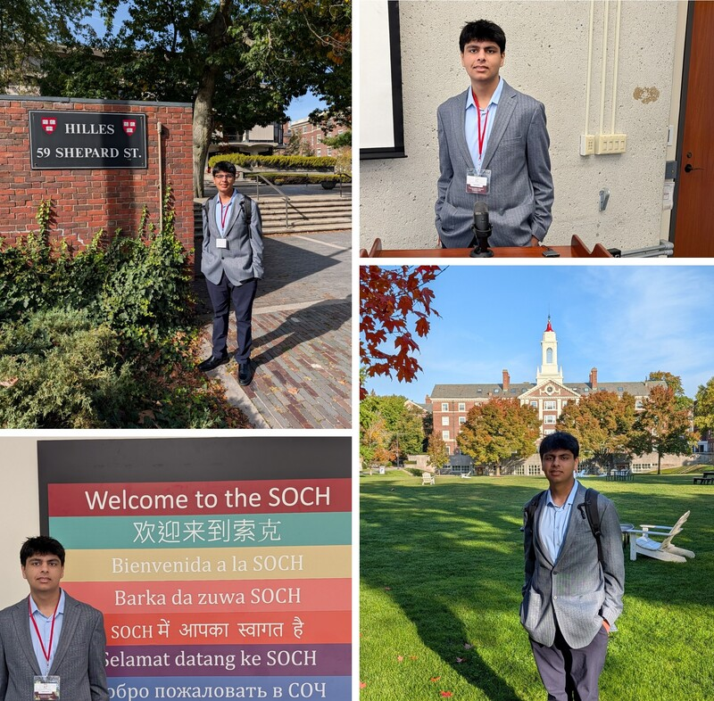
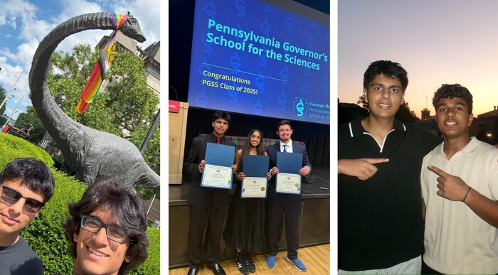
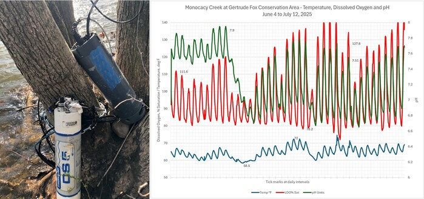
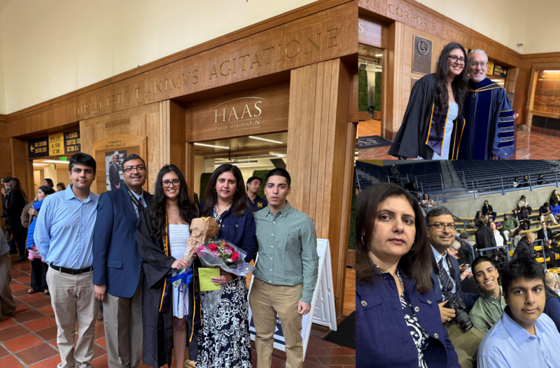
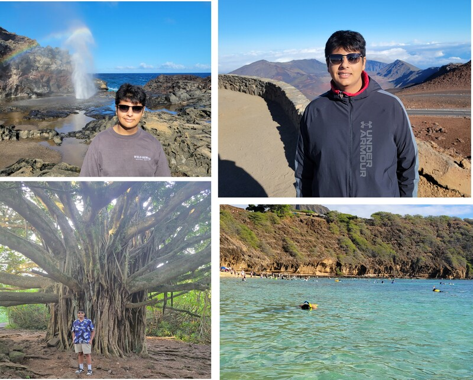
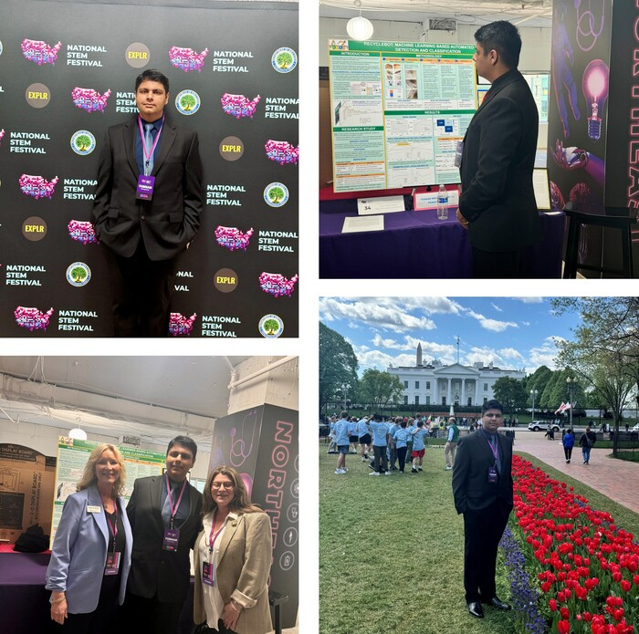
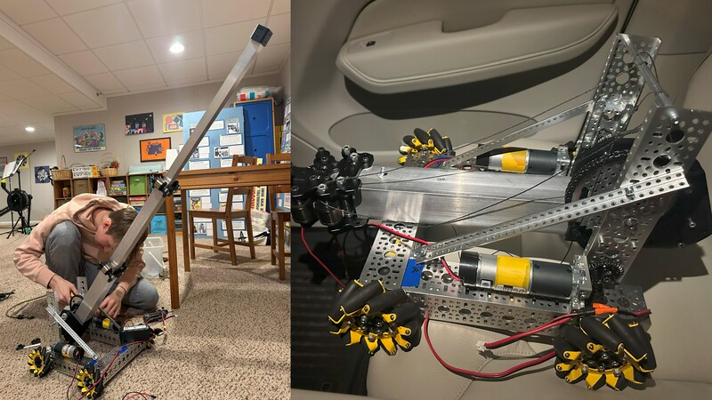
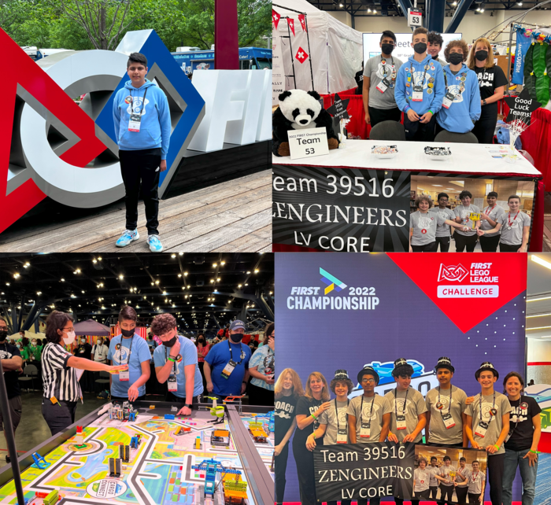
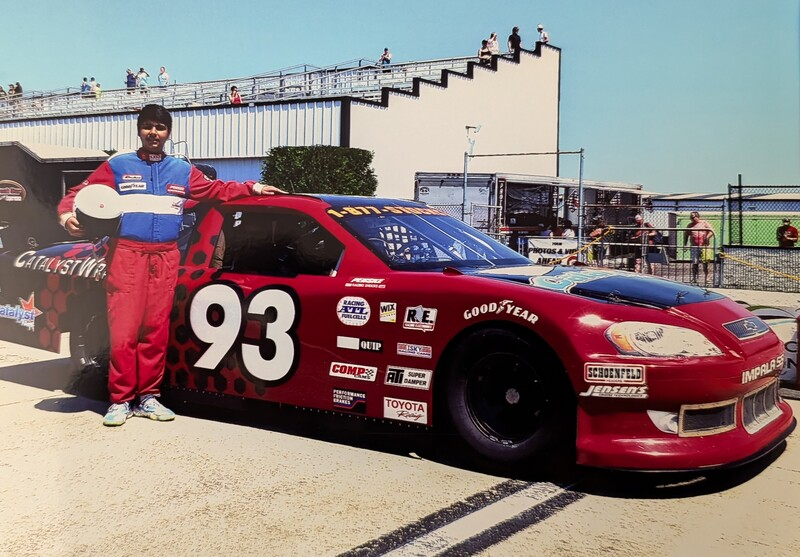

Harvard Research Conference
Participated in the 2025 Harvard Science Research Conference, which included Innovation Challenge. Engaged with cross-disciplinary keynotes (computational biology, molecular diagnostics, ethics/policy) and translated insights into my research approach and partnerships.

Pennsylvania Governor School of the Sciences (PGSS)
Selected to participate in the prestigious summer program focusing on advanced scientific modeling, laboratory research, and college-level coursework in science and technology.

Installing Water Quality Probes (Sierra Club)
Volunteered with the Sierra Club to install and calibrate water quality monitoring probes in local waterways, contributing crucial data to regional environmental conservation efforts.
Drone Footage of Hawaii
Captured stunning aerial video and photography of the Hawaiian landscape, focusing on ecological and volcanic features.

Tanya's Commencement @ Berkeley
A memorable family milestone—celebrating sister's graduation from the prestigious University of California, Berkeley.

Ecological Adventures
Hiking diverse terrains and snorkeling over reefs to learn about delicate balance in the connected ecosystems, cemented my interest in environmental conservation.

National STEM Festival
Showcased an innovative scientific project to a national audience, engaging with peers and professionals on the societal impact of technology and science.

Building Robot Late in the Night
A formative experience in competitive robotics, showcasing the dedication and complex problem-solving required to meet competition deadlines.

Congressional App Challenge (DC)
Designed a functional application to the Congressional App Challenge for the Pennsylvania 7th Destrict, focusing on a community waste recycling and environmental sustainability. Presented the work at US Capital in Washington DC

FLL Robotics World Championship
Competed at the **FIRST LEGO League World Championship**, an early and influential experience that fostered a passion for engineering, teamwork, and innovation.

Pocono Raceway
Got behind the wheel at the Pocono Raceway, sparking an interest in the engineering, aerodynamics, and physics of motorsports.